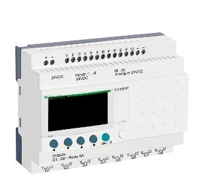

PLC
Un PLC (controlador logico programable) también conocido como autómata programable es básicamente una computadora industrial la cual procesa todos los datos de una máquina como pueden ser sensores, botones, temporizadores y cualquier señal de entrada.
Para posteriormente controlar los actuadores como pistones, motores, válvulas, etc… y así poder controlar cualquier proceso industrial de manera automática.

¿Como funciona un PLC?
Para que un PLC pueda procesar y controlar cualquier sistema se necesita que este previamente programado para la tarea que va a realizar. Para poder programarlo se necesita un software que es especifico dependiendo la marca y cada programa cuenta con
diversos lenguajes de programación en los cual escribes instrucción por instrucción lo que se va a procesar y controlar.